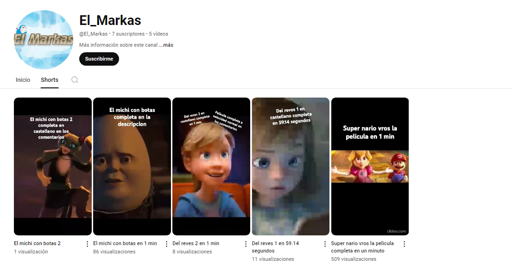

El Markas: Explorando lo Aleatorio en Cortos Creativos Bienvenidos al vibrante mundo de El Markas, un canal de YouTube dedicado a la magia de lo inesperado y lo impredecible. Desde su lanzamiento, El Markas se ha establecido como un rincón único en la vasta plataforma de videos, ofreciendo una experiencia visual refrescante y diversa a sus seguidores. ¿Qué es El Markas? El Markas es un canal especializado en la publicación de shorts—esos breves y concisos videos de menos de 60 segundos que capturan momentos de pura creatividad e imaginación. A diferencia de otros canales que siguen un formato predecible o temático, El Markas se distingue por su enfoque en la aleatoriedad. Cada video es una sorpresa, una ventana a un universo donde la variedad y la espontaneidad reinan. Contenido Variado y Sorprendente En El Markas, no hay dos videos iguales. La esencia del canal radica en la creación de shorts que abarcan una amplia gama de temas y estilos. Desde parodias cómicas hasta trucos visuales impresionantes, desde reflexiones filosóficas breves hasta desafíos hilarantes, el contenido es tan diverso como los intereses de su audiencia. El objetivo es proporcionar entretenimiento que sorprenda y deleite, sin atarse a un solo tipo de formato o género. ¿Qué Puedes Esperar? Creatividad sin Límites: Los creadores de El Markas tienen una habilidad especial para transformar lo cotidiano en algo extraordinario. Cada video es una muestra de inventiva y creatividad, con conceptos que van desde lo absurdo hasta lo brillante. Risas y Entretenimiento: Si lo que buscas es una dosis rápida de risas, El Markas tiene una abundancia de contenido humorístico que te hará reír en cualquier momento del día. Las bromas ingeniosas y las situaciones cómicas están a la orden del día. Estilo Visual Único: La estética de El Markas es tan diversa como su contenido. Los videos pueden variar en estilo, desde ediciones rápidas y dinámicas hasta enfoques más tranquilos y artísticos, reflejando la versatilidad y el enfoque experimental del canal. Interacción y Comunidad: Aunque El Markas se enfoca en videos cortos y aleatorios, no se olvida de construir una comunidad. Los seguidores son animados a participar, compartir sus pensamientos y sugerir ideas para futuros shorts. Esta interacción fomenta un sentido de pertenencia y colaboración entre el canal y su audiencia. Por Qué Deberías Suscribirte Si estás cansado de los formatos de video predecibles y buscas algo que rompa con la rutina, El Markas es el canal que necesitas en tu vida. La promesa de lo impredecible y lo divertido asegura que cada visita sea una nueva aventura. Con una mezcla de creatividad, humor y originalidad, El Markas es el lugar ideal para aquellos que disfrutan de la sorpresa y el entretenimiento sin límites. Así que, si te atreves a adentrarte en un mundo donde lo aleatorio se convierte en arte, no dudes en unirte a la familia de El Markas. ¡Te esperamos para compartir juntos esta emocionante travesía de cortos que desafían las expectativas y celebran la diversidad del contenido!
